Webdesigner
with an eye for detail
Who am I?
passion, motivation & background
Passion
My name is Sarah Timann, and I am 22 years old. I am a Multimedia Design student at Copenhagen School of Design and Technology and have a strong interest in web design and frontend development, where I can combine my passion for visual identity and digital communication with my ability to turn ideas into concrete solutions. I thrive at the intersection of design and technology, where I can think creatively while working in a structured manner with implementation.
Motivation
I have a steep learning curve, am detail-oriented, and highly motivated to apply my experiences from my studies in the real business world. I have a strong desire to learn and develop within web design and digital communication.
Background
My background as a conscript and guide in South Africa has given me the ability to take responsibility, maintain an overview, and communicate clearly – skills that I see as strengths in teamwork and project work.
CV Sarah Timann
During my time as a conscript, I learned to take responsibility for both my own tasks and my role within a group. I experienced how important it is to work closely with others under pressure while maintaining focus on a common goal. Through self-discipline, I learned to structure my time and maintain a strong work ethic, even when the situation was demanding.
As a guide in South Africa, I learned to communicate clearly and adapt my communication to different audiences. I gained experience working with people from other countries and developed a strong cultural understanding. At the same time, I learned to provide service, be welcoming, and think in a problem-solving way, while also being responsible for organizing and coordinating activities.
During my three years as a lifeguard, where I also had responsibility for first aid, I learned to show empathy and helpfulness by supporting people in stressful situations. At the same time, I gained solid experience in being vigilant and constantly attentive to ensure the safety of others.
I am a Marketing Assistant at Idura, where I apply my academic knowledge in practice. I work with the CMS system HubSpot, where I am responsible for ongoing website maintenance, SEO, content, events and other marketing tasks.
Skills
my digital skill set
Website Design & Layout
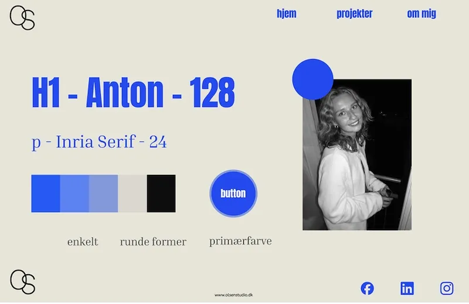
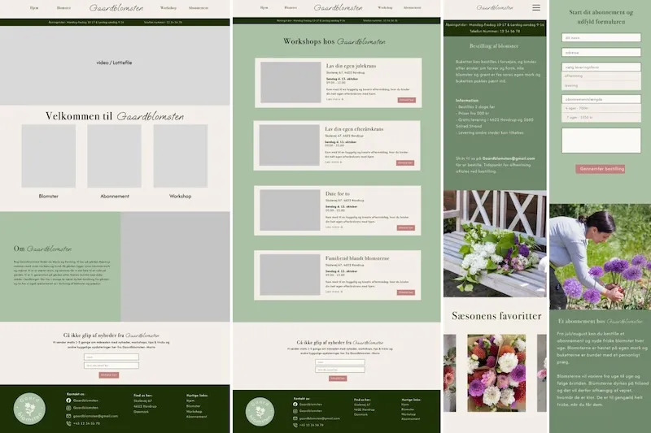
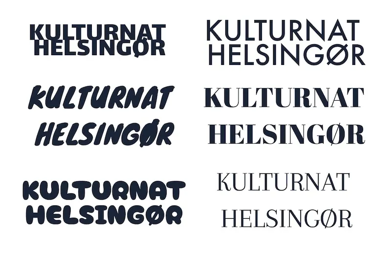
I have worked on designing and developing websites where structure, typography, and interaction work together to create a strong digital experience.
Git, GitHub, Netlify, Supabase, Vercel
Graphic Design
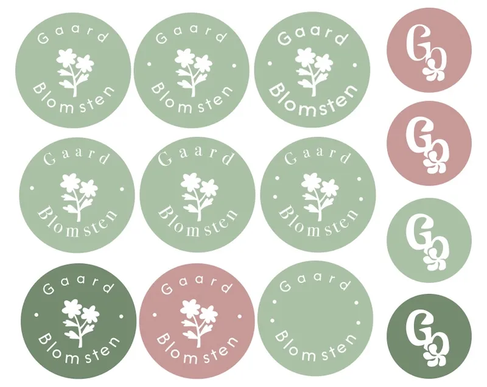
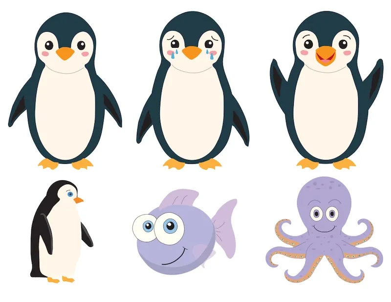
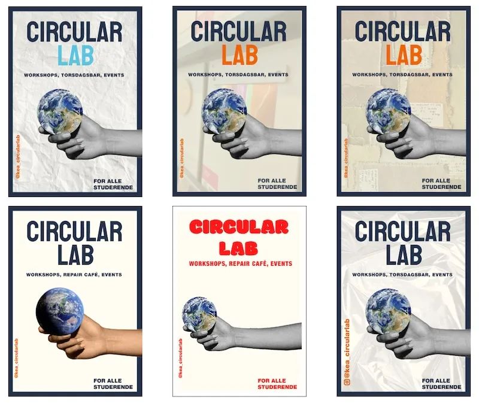
I am proficient in Figma, Adobe Creative Cloud, and Canva, using these tools to create prototypes, visual identities, and graphic elements.
Figma, Adobe Creative Cloud, Canva
Frontend Development
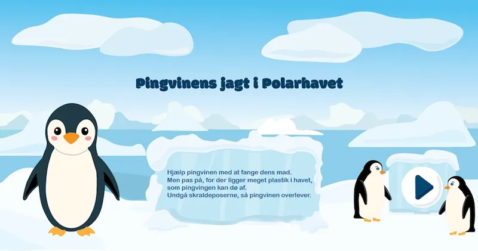
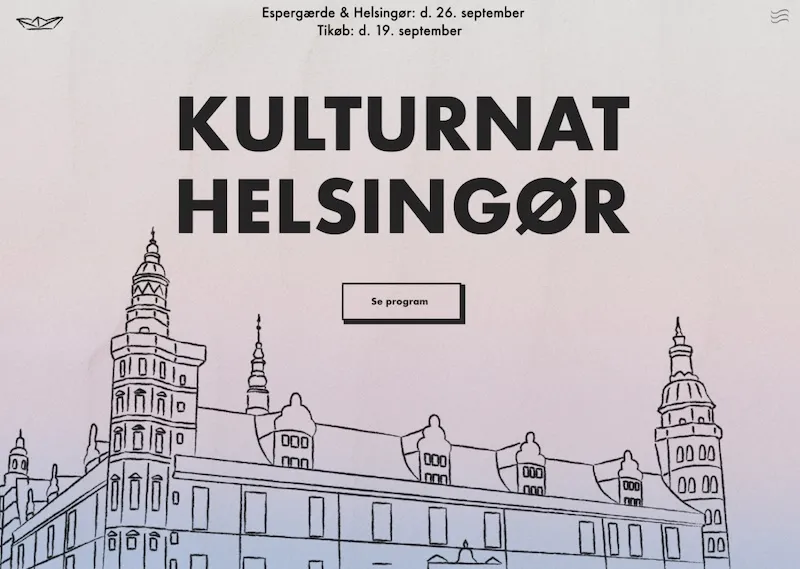
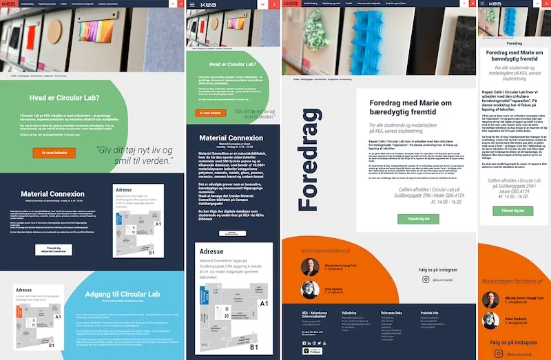
I have experience developing web solutions where I translate ideas into functional and responsive websites that are both visually appealing and easy to navigate.
HTML, Vanilla CSS, Tailwind CSS, Javascript, Astro, Next.js, React, TypeScript
Design meets code
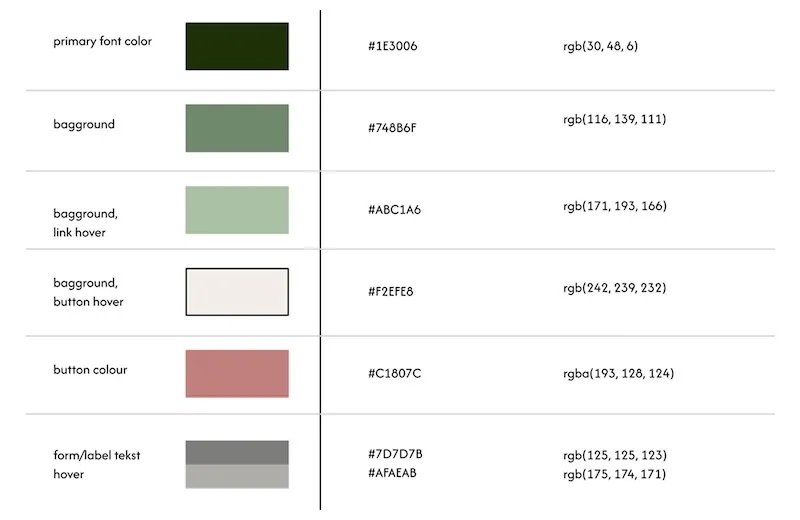
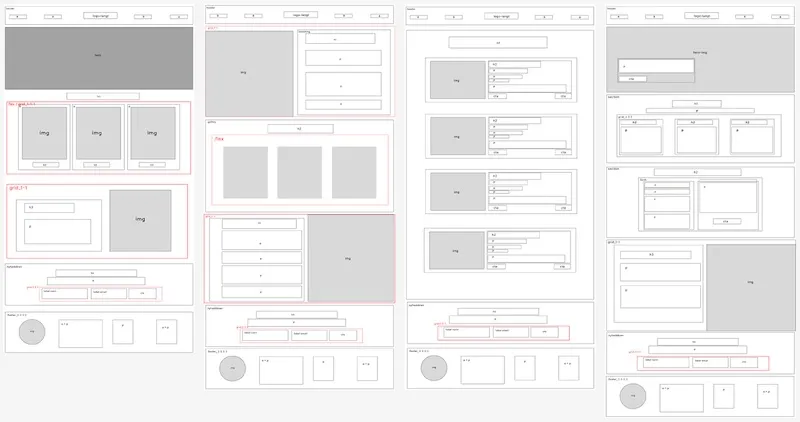
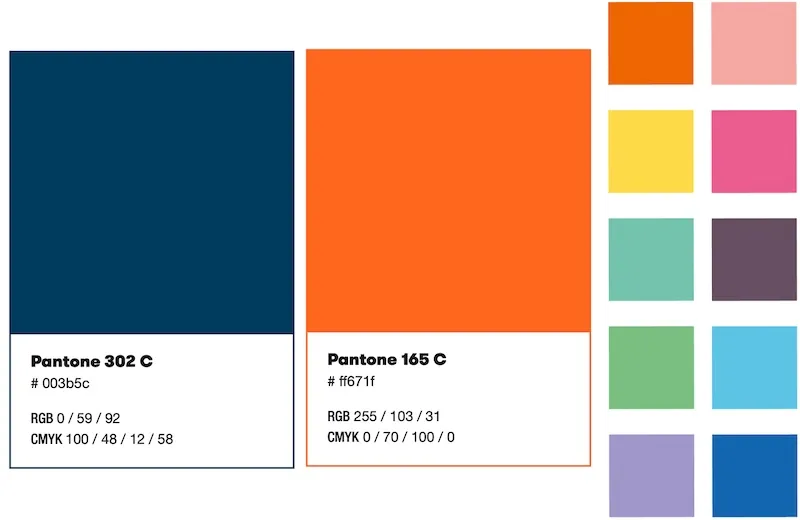
With an eye for both form and function, I create code that bridges the gap between visual expression and technical solution.
Write to me
Looking forward to hearing from you
45+ 30 20 31 70
You are very welcome to check out my projects on GitHub or visit my LinkedIn, and if you have any questions, please do not hesitate to send an email or contact me by phone.